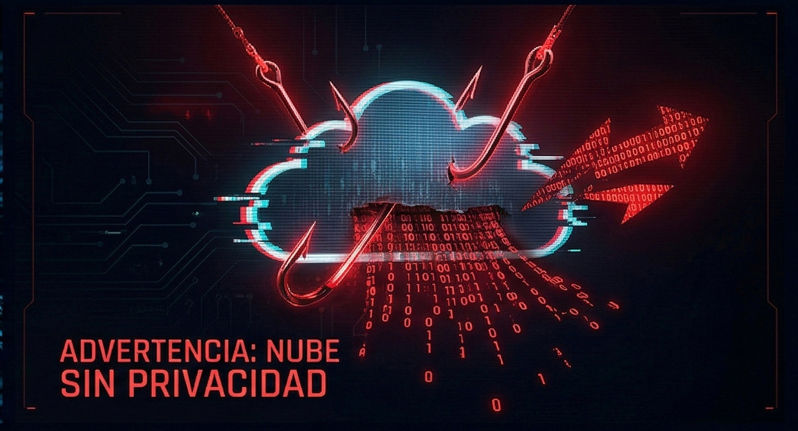
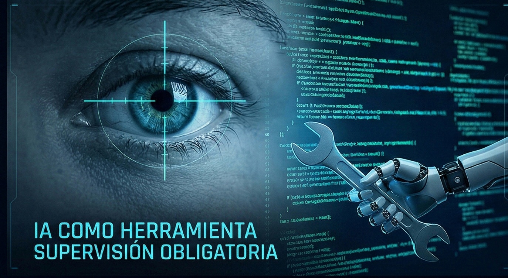
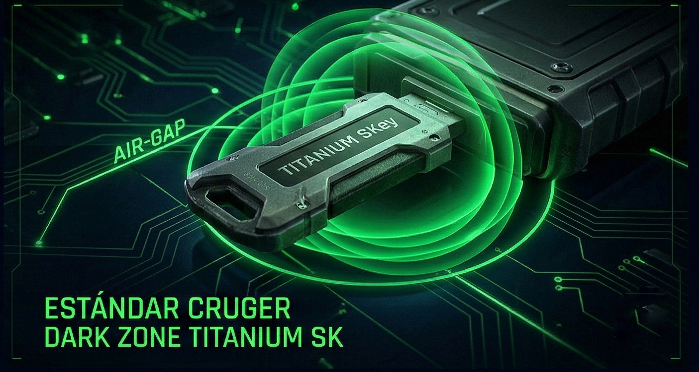

Doctrina de Seguridad y Soberanía Digital
El Mito de la Transparencia Absoluta:
Por qué el Secreto Industrial es el Verdadero Estándar de Seguridad
Existe una narrativa contemporánea que intenta dictar que la seguridad informática solo puede validarse a través del modelo de código abierto (Open Source) y la transparencia absoluta. Bajo esta premisa teórica, ocultar la arquitectura o el código fuente se clasifica erróneamente como una "mala práctica".
En Cruger Corp, rechazamos categóricamente esta visión cuando se trata de salvaguardar activos de importancia crítica. La historia y la realidad corporativa demuestran exactamente lo contrario.
La Verdad sobre el Ecosistema Global
Si la exposición pública del código fuera el estándar definitivo de seguridad y éxito, los conglomerados tecnológicos más grandes del mundo, los motores de búsqueda dominantes, los gigantes de la inteligencia artificial y las agencias de seguridad nacional publicarían sus algoritmos centrales. La realidad es que no lo hacen, y nadie cuestiona la eficacia de sus plataformas.
Mantener el secreto industrial y la opacidad estructural es lo que sostiene la infraestructura crítica global. Obligar a los sistemas de alta seguridad a ser transparentes bajo la bandera del "código abierto" genera consecuencias devastadoras:
- Armatización Inversa: Se entregan los planos estructurales a cibercriminales, permitiéndoles diseñar ciberataques, troyanos y vulnerabilidades a la medida.
- Caos y Clonación: Se facilita la creación de copias idénticas e incontrolables, diluyendo la autenticidad y disparando el fraude de identidad corporativa.
- Competencia Depredadora: Las organizaciones invierten años en I+D solo para regalar su innovación, creando a sus propios competidores o propiciando el colapso de su modelo operativo.
La Doctrina del Aislamiento Físico (Air-Gapping)
Más allá del debate del software, la medida de ciberseguridad más inquebrantable conocida por la humanidad sigue siendo una ley física: No existe algoritmo, Inteligencia Artificial, ni potencia de cómputo que pueda hackear remotamente un activo que literalmente no está conectado a la red.
"Dark Zone" fue concebido bajo esta doctrina de Soberanía Física. Al ser un sistema de despliegue unitario, diseñado para operar de manera 100% Offline en equipos locales, neutraliza de tajo los vectores de ataque de la era digital: vulnerabilidades de nube, intercepción de tráfico, y exfiltración remota.
Opacidad Táctica: Multiplicador de Fuerza
La "Seguridad por Oscuridad" suele ser criticada cuando se usa para esconder matemáticas débiles. Sin embargo, en la arquitectura de Dark Zone, la opacidad técnica opera como la primera línea de un perímetro infranqueable.
Cuando fusionas un código fuente estrictamente clasificado con una llave de 8 millones de bits de entropía pura, creas un ecosistema asimétrico y devastador para el atacante: Al no tener el código, el atacante no sabe cómo está construida la cerradura; y al enfrentarse a un millón de bytes de ruido blanco, carece de la física computacional para forzarla.
Para Cruger Corp, la transparencia pública es útil para herramientas colaborativas de bajo riesgo. Pero cuando la supervivencia y la soberanía de los datos de una organización están en juego, el secreto, el aislamiento y la fuerza matemática bruta son el único estándar aceptable.

Nuestra Postura
En CRUGER CORP no diseñamos tecnología basándonos en las tendencias comerciales de Silicon Valley. Desarrollamos herramientas bajo un escrutinio científico y táctico riguroso. En la actualidad, la industria tecnológica ha empujado a corporativos, gobiernos e individuos a delegar sus activos más críticos a dos paradigmas altamente inestables: La Nube y la Inteligencia Artificial no supervisada.
Nuestra doctrina es clara: La verdadera seguridad informática no existe si no posees el control absoluto, físico y lógico, de tu información y de los procesos que la gestionan.

El Espejismo de la Nube
Existe un adagio fundamental en la ciberseguridad que la industria comercial intenta silenciar: "No existe la nube, solo es la computadora de alguien más".
Almacenar y procesar información crítica en infraestructuras Cloud significa ceder la soberanía de los datos. La nube es inherentemente un entorno compartido y, por definición, hackeable. Los datos en tránsito están expuestos a intercepciones, redireccionamientos (Man-in-the-Middle) y ataques de infraestructura.
Más allá del riesgo de intrusión externa, operar en la nube implica someterse a telemetría oculta: rastreo de posición geográfica, monitoreo de hábitos de tráfico, indexación de metadatos y captura de datos personales sensibles bajo términos de servicio opacos. Cuando confías tu información a servidores de terceros, renuncias al derecho de privacidad real.

La I.A. como Herramienta, no como Árbitro
No satanizamos el progreso tecnológico. La Inteligencia Artificial es un procesador matemático y analítico formidable. El peligro no radica en la IA misma, sino en su implementación sin criterio ni supervisión humana en infraestructuras críticas.
Un modelo de lenguaje o un algoritmo generativo no posee consciencia situacional. Si se le asigna la tarea de optimizar código de seguridad, su naturaleza es simplificar operaciones para cumplir la función asignada, lo que frecuentemente resulta en la eliminación de protocolos de validación y la creación involuntaria de brechas catastróficas.
"Delegar el control de redes eléctricas, bases de datos estratégicas, o defensas activas a una IA autónoma no es innovación; es negligencia. El software requiere criterio, y el criterio es una característica exclusivamente humana."
El código escrito o gestionado por máquinas debe ser auditado por humanos. Una IA no puede discernir el impacto geopolítico, corporativo o vital de una fuga de datos. El Human in the Loop (Humano en el ciclo de decisión) no es opcional en nuestros protocolos; es el núcleo operativo.

El Estándar CRUGER: Air-Gap y Control Físico
Frente a la vulnerabilidad de la interconexión constante, nuestra respuesta tecnológica es el aislamiento estratégico.
Nuestros modelos de implementación (como el protocolo DARK ZONE TITANIUM) se basan en servicios y herramientas OFFLINE. Operamos bajo el principio Air-Gap: sistemas diseñados para funcionar al 100% desconectados de internet, volviéndolos matemáticamente inmunes a ataques remotos, ransomware de red o alteraciones en la nube.
Creemos en el cifrado de altísima entropía ejecutado localmente, donde las llaves maestras existen únicamente en hardware físico (Tokens/SKey) bajo el control absoluto de nuestros clientes. Sin servidores de terceros, sin telemetría, sin "optimización" no supervisada.
En CRUGER CORP, no alquilamos seguridad. Construimos soberanía.